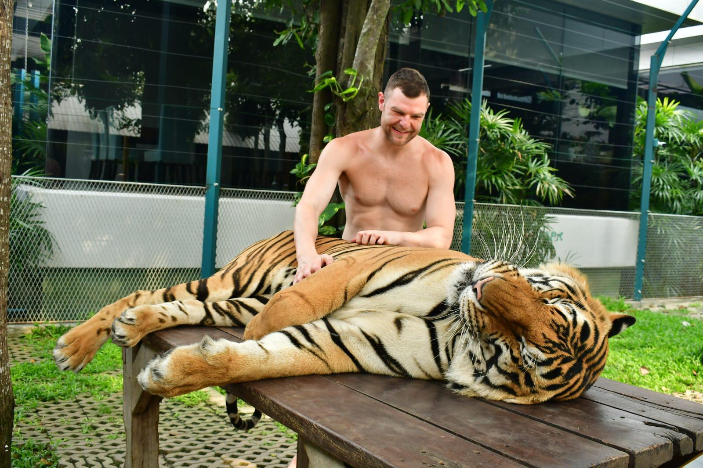
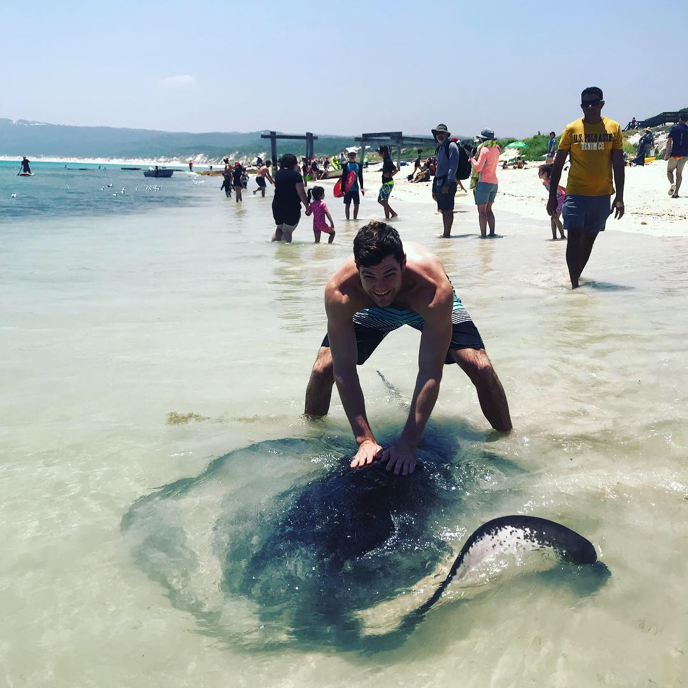
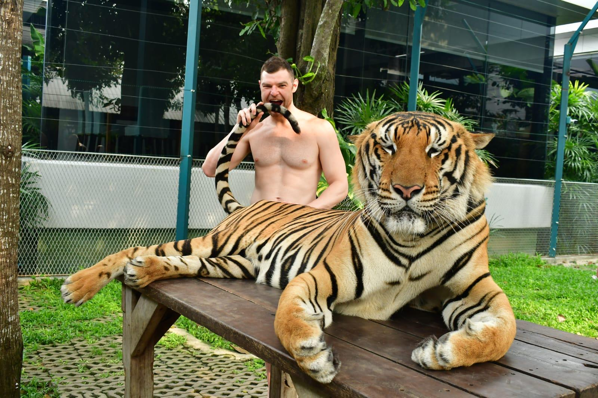
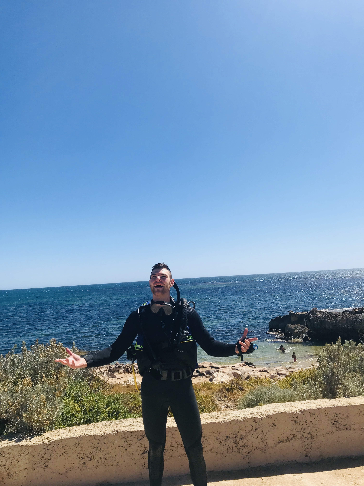
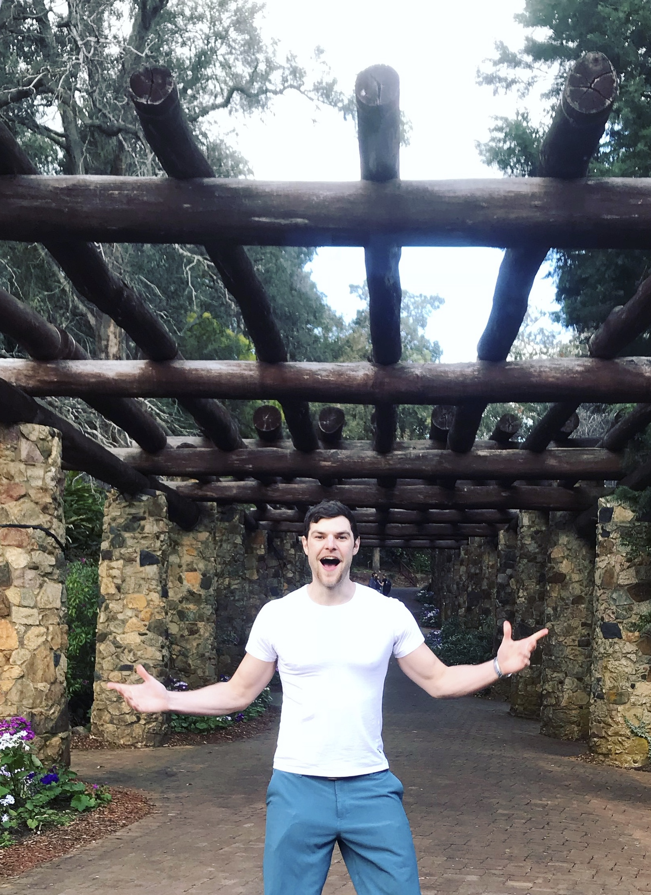
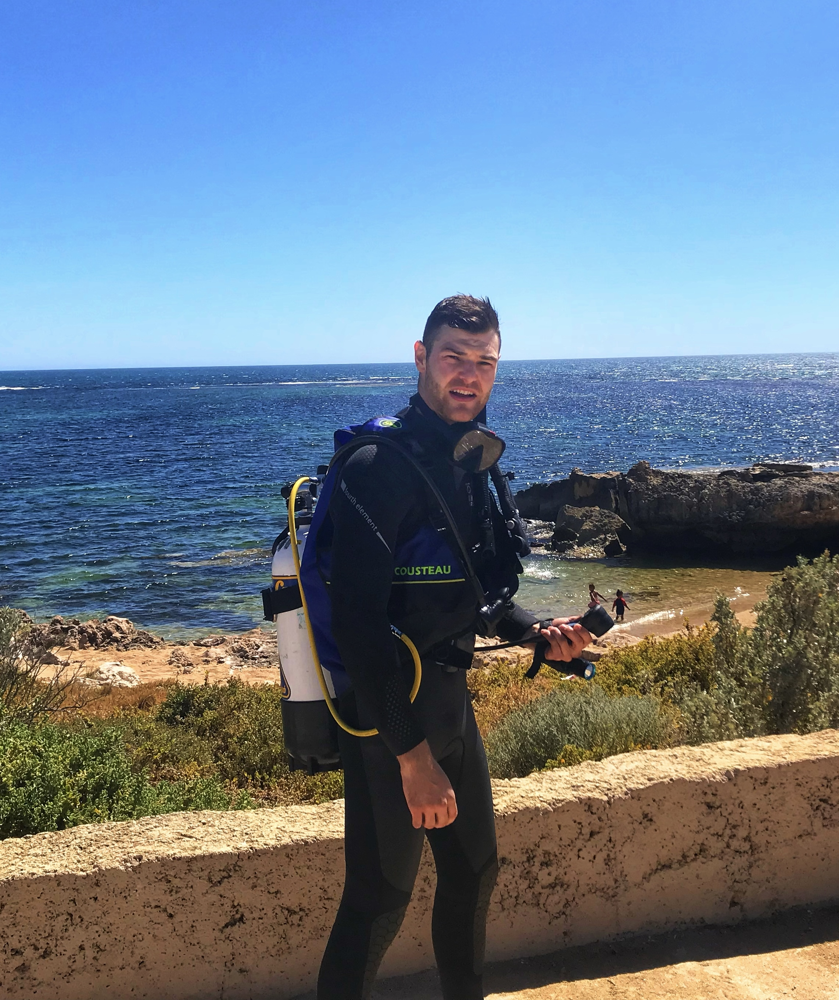
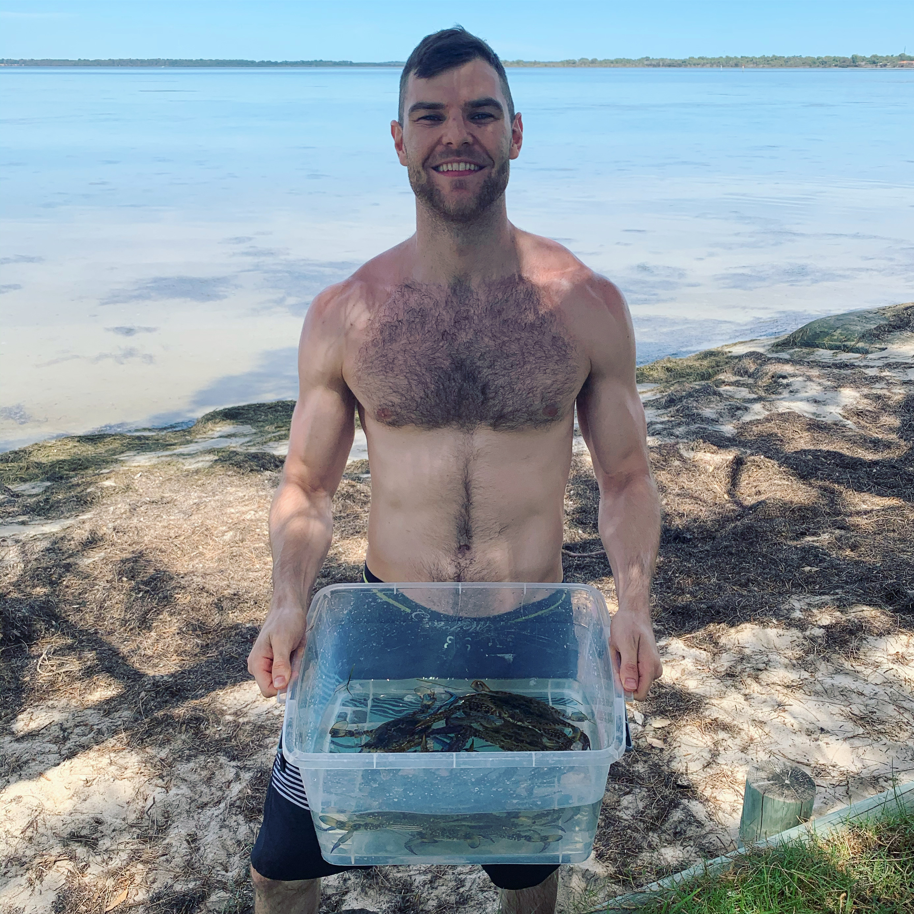

Explore
Life Outside The Build.
Travel, diving, wildlife, and the moments that keep the brand personal without turning the site into a dump.

Featured Moments
A few images can carry the whole memory.
Curated, not crowded.

Real moments beat filler.

Good stories do not need long captions.

Perspective gets wider fast.
Photo Reel
A rotating strip of real life.
Built so the image set can be swapped later without rebuilding the section.






Motion Fragments
Some moments work better in motion.
Short loops. No giant gallery dump.
Quiet motion still carries atmosphere.
Better than turning the page into a blog.
Why It Belongs
Range makes the brand feel earned.
The right life moments add dimension. They should support the brand world, not compete with it.